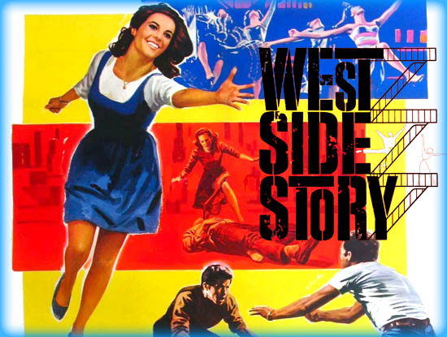

Amerykańsko-brytyjski film muzyczny z 1961 roku w reżyserii Roberta Wise’a i Jerome’a Robbinsa. Film stanowi adaptację broadwayowskiego musicalu o tym samym tytule Arthura Laurentsa[2], który z kolei jest inspirowany dramatem Williama Szekspira Romeo i Julia. Obraz nagrodzony Oscarem dla najlepszego filmu roku (1961) i Złotym Globem dla Najlepszego filmu komediowego lub musicalu (1962).
Stany Zjednoczone, lata 50. XX wieku. Bernardo (George Chakiris) dowodzi gangiem Sharków – Portorykańczyków rywalizującym z grupą Jetsów – białych Amerykanów, na czele których stoi Riff (Russ Tamblyn). Wbrew obowiązującym zasadom jego przyjaciel Tony (Richard Beymer) zakochuje się w Marii (Natalie Wood), siostrze Bernarda. Chcą razem uciec. Tymczasem oba gangi szykują się do ostatecznego starcia.